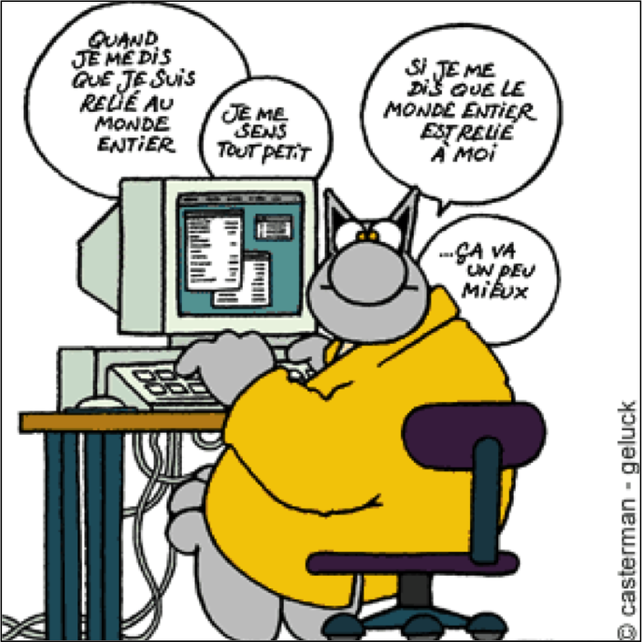

Création d'Applications sur Internet
Objectifs du cours de CAI
Fatemeh BORRAN
Organisation (1/2)
Prof: Fatemeh BORRAN
- Cours & Labos:
- Contact:
- Email: fatemeh.borran@heig-vd.ch
- Bureau: B29
- Tel: 024 55 77562
https://cyberlearn.hes-so.ch/course/view.php?id=7670
Assistant: Christophe GREPPIN
- Labos
- Email: christophe.greppin@heig-vd.ch
Organisation (2/2)
- Cours: 2 périodes toutes les 2 semaines (lundi 14h-15h35)
- 5 Chapitres
- Labo: 2 périodes par semaine (mardi 15h40-17h20)
- 3 Labos + 1 Projet
- Evaluation:
- 2 TEs + 3 Labos + Projet
- TE1: lundi 16 novembre 2015 à 14h
- TE2: lundi 11 janvier 2016 à 14h
- Note finale:
- 0.5 (TE1+TE2)/2 + 0.5 (Labo1+Labo2+Labo3+2*Projet)/5
Introduction: qui je suis?
- Doctorat en Informatique de l’EPFL (2010)
- Labos: langages de programmation, programmation concurrente, algorithmes distribués
- R&D: systèmes distribués et tolérance aux fautes
- A l’HEIG-VD depuis 2012
- Cours: CAI (Prof. Nastaran Fatemi)
- Labos: CAI, BDR, ASD1, BDA, CLD, DMG
- Ra&D: Calcul parallèle, data mining, BigData analytics, Cloud computing.
Introduction: qui êtes vous?
- Qui est qui?
- Introduire vous-même (prénom, nom, origin)?
- Parler de vos études?
- Pourquoi vous êtes ici?
- Que voulez vous faire après?
- Est-ce que vous avez déjà utilisé un ordinateur, Internet, email, chat, réseaux sociaux?
- Est-ce que vous avez un ordinateur?
Votre niveau d'étude
- EPF
- Université en Suisse
- Université à l’étranger
- HES
- Gymnase
- Maturité professionnelle
- Diplôme à l’étranger
Votre connaissance Informatique
- Langage de programmation
- C
- C++
- Java
- Scala
- Autre
- Application Web
- HTML
- PHP
- JavaScript
Un peu statistique
- Nombre de utilisateurs Internet?
- Nombre de sites web sur Internet?
- Nombre de apparails connecté sur Internet à un moment donné?
- Nombre de langages de programmation?
- Nombre de langages de programmation pour créer des sites web?

Pourquoi ce cours? (1/2)
- Internet devient aujourd'hui le média numéro un de communication.
- Nous sommes tous et toutes des utilisateurs et des utilisatrices d'Internet.
- La compréhension du fonctionnement de base d'Internet devient une nécessité.
Comprendre les technologies d'Internet nous permet de comprendre et de maîtriser l'outil que nous utilisons tous les jours.
Pourquoi ce cours? (2/2)
- Internet est un bon exemple de création mettant en œuvre
- technologies de télécommunications
- systèmes d'informations
- En étudiant les applications Internet, nous nous familiarisons avec ces technologies et nous apprenons leurs utilités dans de nombreux domaines.
La création des applications Internet est un des métiers multidisciplinaires qu'exerce l'ingénieur-e informaticien-ne.
Objectifs pour l'année préparatoire
- Apprendre l'approche de l'ingénierie Informatique:
- analyse de problèmes
- conception des solutions
- mise en œuvre de logiciels
- tests et évaluation
- Connaître les matières principales de la formation en informatique:
- architecture des systèmes informatiques
- systèmes d'informations et bases de données
- programmation
- réseaux
Objectifs de cours en détails
- A l'issue de ce cours, vous serez capable de :
- décrire principes du fonctionnement des applications sur Internet
- décrire le fonctionnement du navigateur, les adresses URL et les noms de domaines
- décrire le fonctionnement du protocole HTTP
- identifier les étapes de la réalisation d'une application Web
- utiliser les éléments principaux du langage HTML
- utiliser les feuilles de styles CSS pour gérer l'apparence de la page Web
- identifier le besoin d'interactivité d'une application Web, comprendre le fonctionnement des formulaires HTML et savoir les appliquer
- créer un site dynamique en utilisant des fonctionnalités de PHP
- comprendre la notion d'hébergement et savoir mettre en place un serveur Web
Contenu du cours
- Chapitre 1: Internet et le Web
- Chapitre 2: Fonctionnement du Web
- Chapitre 3: Langage HTML
- Chapitre 4: Langage CSS
- Chapitre 5: Langage PHP
Questions?!
Année 2015-2016 - Fatemeh Borran - /